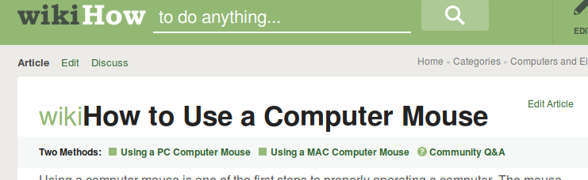
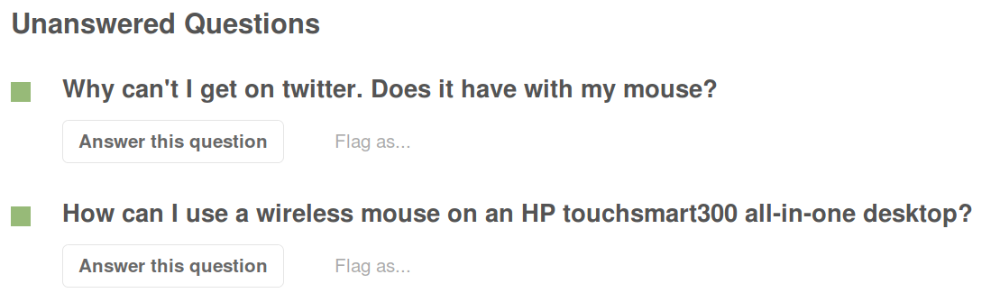
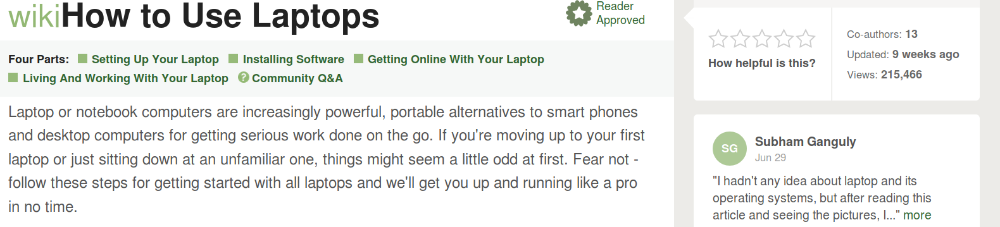
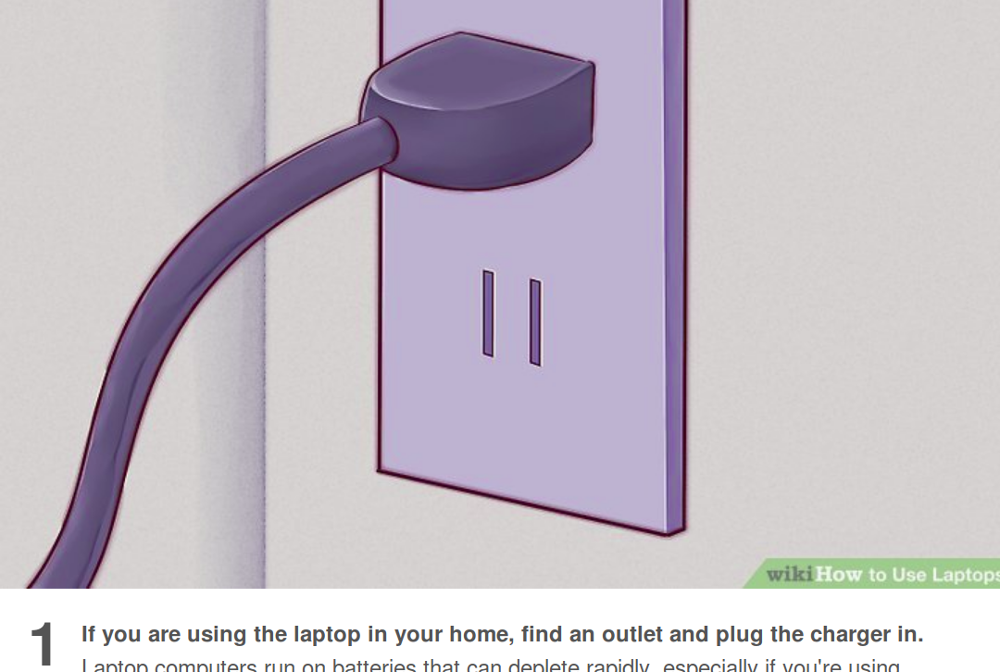
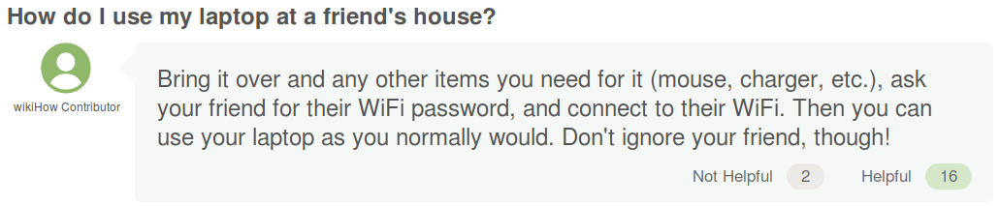
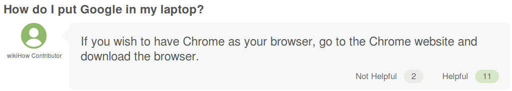
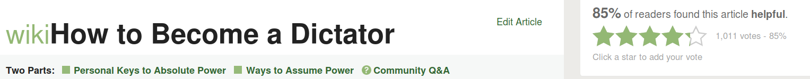

Fillas Page | Home
The worst of WikiHow

I should not have to tell you what is wrong with this article

I would like to point out the idiot that thinks that his mouse affects FUCKING TWITTER
Wonder why it isn't answered?

This should be obvious to any person !!

I'm speechless, Fucking speechless

This idiot does not get that portable computers are PORTABLE !!
Idiot!

What ?!?

85% found this helpful. I checked this page and it had 163,311 views. 85% of 163,311 is 138,814
That means that there is 138,814 potential new dictators and there is currently ca. 195
in the world
Well, that's reassuring
Okay, i have put a link to this image because I don't think that you are ready for it.
Take a deep breath and behold: here it is
Goodbye and goodluck ;)